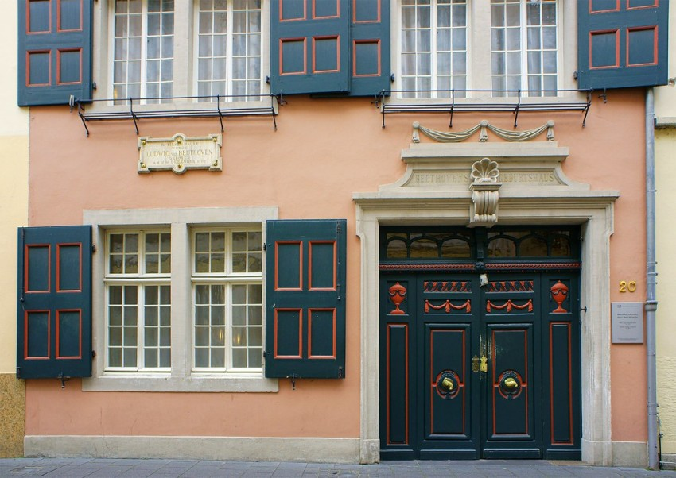
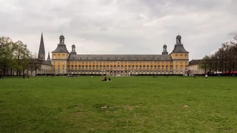

Lugares destacados
Bonn cuenta con varios lugares emblemáticos que vale la pena visitar:
El Beethoven-Haus es la casa donde nació Ludwig van Beethoven en 1770 y actualmente funciona como museo. Es uno de los puntos turísticos más visitados de la ciudad.

La Catedral de Bonn (Bonner Münster) es uno de los símbolos de la ciudad. Construida entre los siglos XI y XIII, combina estilos románico y gótico.

El Parque Hofgarten es un hermoso parque ubicado en el centro, ideal para caminar o relajarse. Muy cerca se encuentra la Universidad de Bonn, una de las más prestigiosas de Alemania.

Otro lugar destacado es el Museo de Arte Moderno (Kunstmuseum Bonn) y el Museo de Historia Natural, ambos de gran interés cultural.